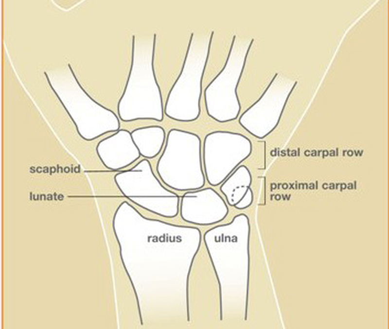
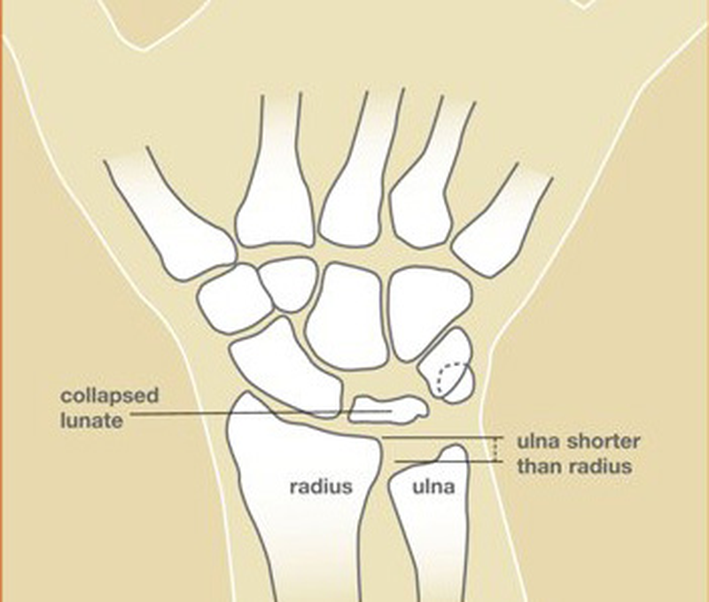

Condition
Kienböck's Disease
Loss of blood supply to the lunate, a central bone in the wrist. Over time the bone can collapse and lead to wrist arthritis. Treatment depends on how far the disease has progressed.

Illustration © American Society for Surgery of the Hand
What is Kienböck's disease?
Kienböck's disease is avascular necrosis (loss of blood supply) of the lunate bone in the wrist. The lunate is a small, centrally located bone that takes much of the load every time you push through your wrist. It depends on a very small number of tiny blood vessels, and when that blood supply is interrupted the bone weakens, develops tiny cracks, and eventually can collapse. As the lunate collapses, the rest of the wrist bones shift, and arthritis develops over years.
Kienböck's disease is most common in men between 20 and 40 years old, and usually affects only one wrist.
Common symptoms
- A deep, aching pain in the middle of the wrist
- Tenderness directly over the lunate (the middle of the back of the wrist)
- Swelling and stiffness
- Loss of wrist motion, especially extension (bending the wrist back)
- A weaker grip
- Pain with push-ups, pushing up from a chair, or lifting weights
- Symptoms that have been there for months or years and have slowly gotten worse
Why does it happen?
There is no single known cause. Several factors are thought to contribute:
- A short ulna (the forearm bone on the pinky side). When the ulna is shorter than the radius, more load is transferred through the lunate, which may help set the disease in motion.
- The shape of the lunate. Some people are born with a lunate shape that has fewer blood vessels entering it.
- Injury. A single wrist injury or many small repeated injuries may cut off blood flow.
- Medical conditions. Lupus, sickle cell disease, and long-term steroid use can reduce blood flow to small bones.

Illustration © American Society for Surgery of the Hand
Stages and treatment
Kienböck's is typically graded in stages based on what the X-rays and MRI show. Treatment is very different at each stage — there is no single operation that fits every patient. The goal is to relieve pain, preserve wrist motion where possible, and prevent or delay arthritis.
Early disease — no lunate collapse
- Observation, activity modification, and splinting. In some early cases, simply unloading the wrist with a brace and modifying activity can allow the blood supply to recover.
- Anti-inflammatories. Used for symptom control during early treatment.
- Radial shortening osteotomy. When the ulna is short compared to the radius, shortening the radius equalizes the two bones and takes load off the lunate. This is a long-proven operation for early-stage Kienböck's.
- Vascularized bone flap from the knee — MFT flap. The medial femoral trochlea (MFT) is the cartilage-covered part of the inner knee. A small piece of this bone — with its own blood vessels still attached — is taken and connected under the microscope to blood vessels at the wrist, where it is used to rebuild the lunate. The MFT is particularly well matched to the lunate because it restores both living bone and a joint surface. This operation is considered in selected patients with early to moderate disease before the lunate has fully collapsed.
Advanced disease — lunate collapsed or wrist arthritic
Once the lunate has collapsed or the wrist has become arthritic, rebuilding the lunate no longer helps. Salvage operations relieve pain by changing how the wrist moves:
- Proximal row carpectomy. Removing the row of wrist bones that includes the lunate lets the remaining bones move smoothly against the forearm. Pain relief is reliable, and patients keep useful wrist motion.
- Partial or total wrist fusion. Fusing some or all of the wrist bones eliminates painful motion. Strength is often preserved; motion is reduced.
For most patients with Kienböck's disease, the right first step is not surgery. Activity modification, bracing, or a radial shortening osteotomy are often better options. However, in selected patients with early to moderate disease, a vascularized bone flap from the knee (MFT) can rebuild the lunate with living bone and a new cartilage surface — something that is not possible with other techniques. This is a specialized reconstruction performed at only a small number of hand surgery practices. Dr. Barrera has fellowship training in these techniques and offers them when they are the right fit for the stage of disease.
What to expect at your visit
Dr. Barrera will review your history, examine the wrist, and look at any prior X-rays you have. Because Kienböck's often looks normal on early X-rays, an MRI is usually needed to confirm the diagnosis and to see how much of the lunate still has a blood supply. A CT scan is sometimes added to look for collapse and to check the shape of the neighboring bones. You will leave the visit with an understanding of what stage the disease is in and what treatment options make the most sense for you.
Call the office if wrist pain has been going on for months, is worse with push-ups or pushing up from a chair, or is limiting your grip. Earlier treatment in Kienböck's disease gives more options — including operations that aim to save the lunate rather than replace the joint.
Related
Questions?
Call your office location for non-urgent questions:
- NYU Langone Laurelton · 646-501-4950
- NYU Orthopedic, Woodside · 929-429-3222
- NYU Orthopedic, Richmond Hill · 718-206-6923
- Jamaica Hospital Ambulatory Care Center (ACC) · 718-301-0720
See our office contact information for addresses and fax numbers.